主动视觉跟踪
✨我们使用具身视觉跟踪任务来评测具身视觉 agent 在复杂动态环境中的表现。
简介：
具身视觉跟踪是一项具有挑战性的任务，要求 agent 在 3D 环境中动态跟随移动目标，利用第一人称视觉并与周围环境持续交互。我们依托 UnrealZoo 平台，在真实且不断变化的条件下对 agent 进行评测，以评估其在不同场景中的鲁棒性、适应性和泛化能力。
UnrealZoo 提供了大量照片级真实、丰富多样的环境，作为具身 AI agent 的试验场。多样的场景和 agent 使研究人员能够将具身 AI 的能力推向新的高度，在超越简单室内导航的场景中进行测试。
UnrealZoo 面向具身视觉跟踪的关键特性
-
照片级真实动态环境： 旨在模拟一系列真实世界挑战，包括遮挡、动态光照、不规则地形和多层结构。
-
多 Agent 场景： Agent 必须在包含多个移动 agent 和物体的动态环境中导航并跟踪目标，促进面向救援任务或监控等应用的协同跟踪。
-
可定制环境 API： 我们改进后的 API 使用户能够轻松设置复杂的跟踪任务以及 agent 与其环境之间的交互，包括用于控制频率调节的时间膨胀 wrapper。
-
数据采集 API： 用户可以使用 UnrealCV+ 直接从环境中采集视觉数据集，支持颜色、物体掩码、表面法线和深度数据的捕获。
在 UnrealZoo 中评测跟踪 Agent
以下是跟踪 agent 在四类场景中第一人称视角的示例：
📌室内场景：
Agent 需要应对频繁的低矮障碍物和狭窄通道，考验其遮挡处理能力和精确运动能力。
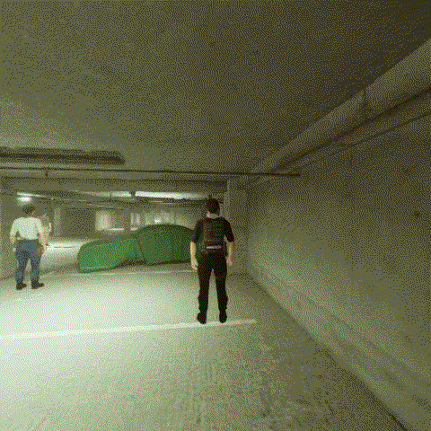
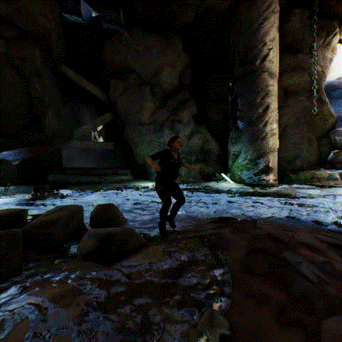
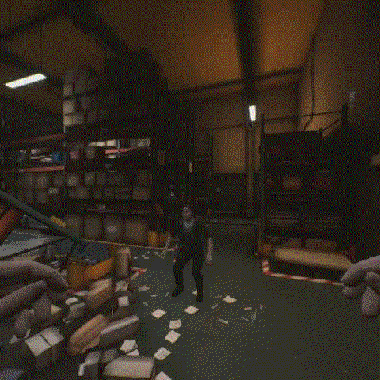
📌宫殿场景：
Agent 面对多层结构和复杂设计，掌握空间感知能力至关重要。
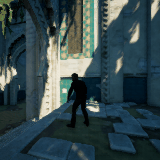
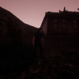
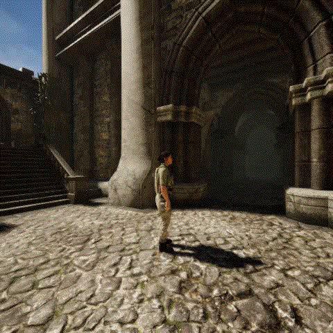
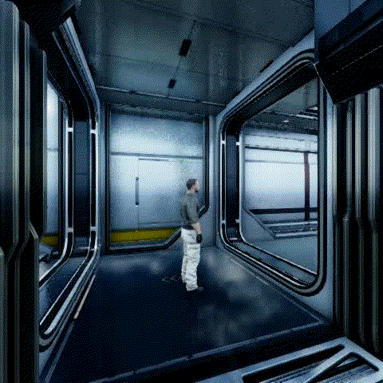
📌野外场景：
不规则地形和变化的光照条件模拟了不可预测条件下的户外跟踪。
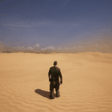
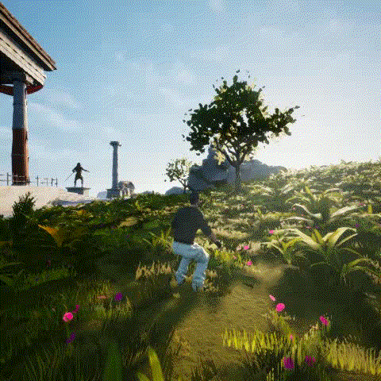
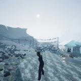
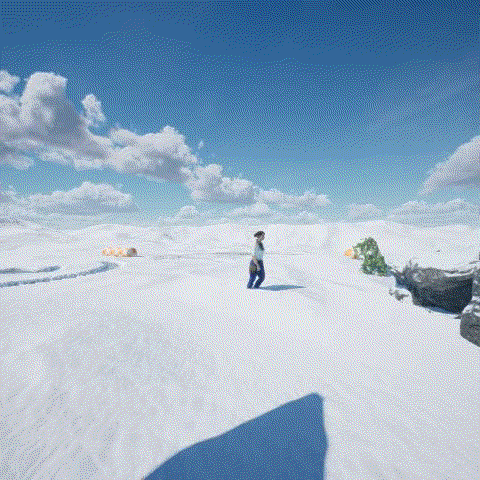
📌现代场景：
这些高保真场景代表真实世界环境，如工厂和停车场，要求 agent 适应细节丰富且密集的周围环境。
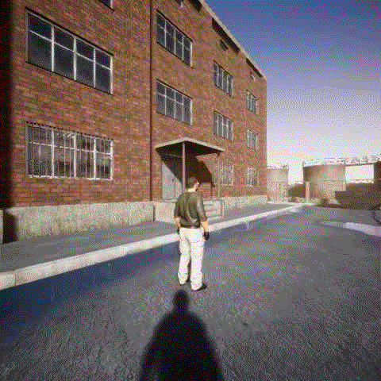
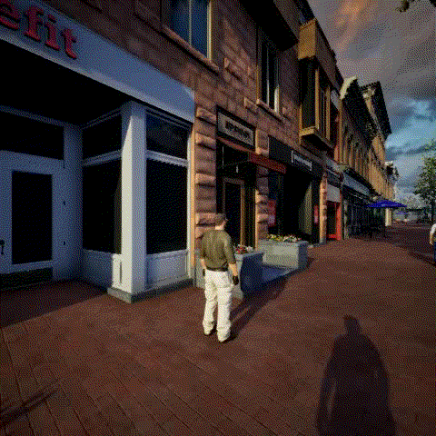
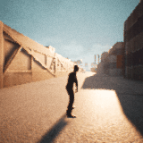
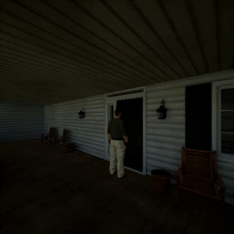